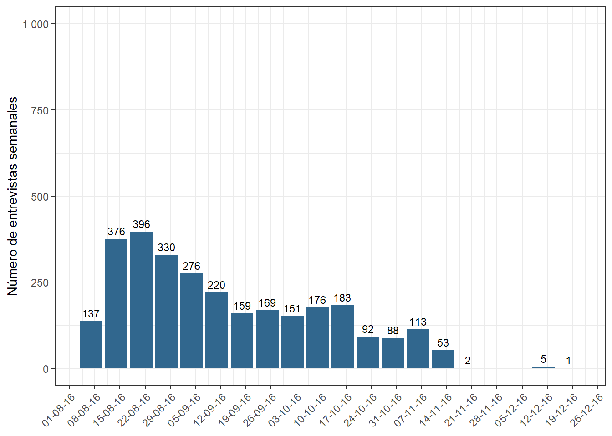
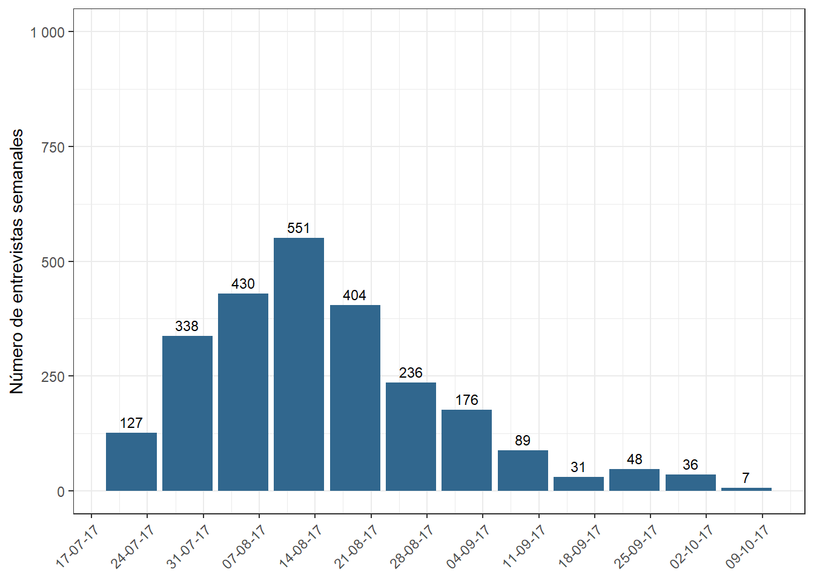
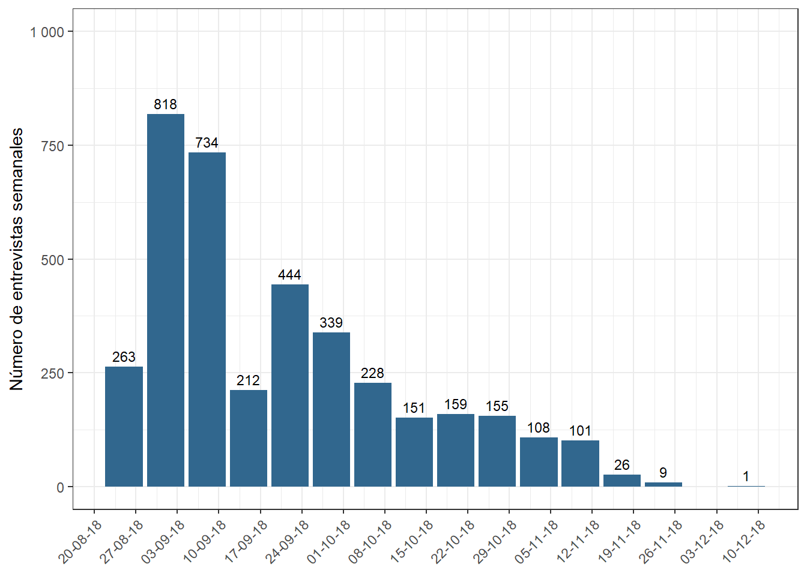
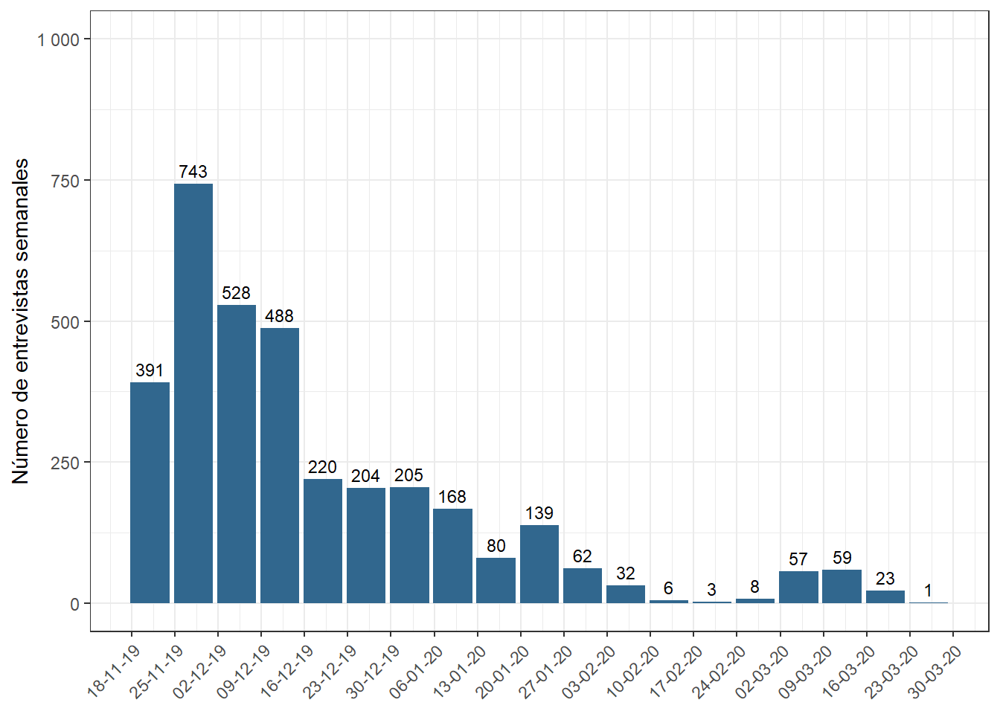
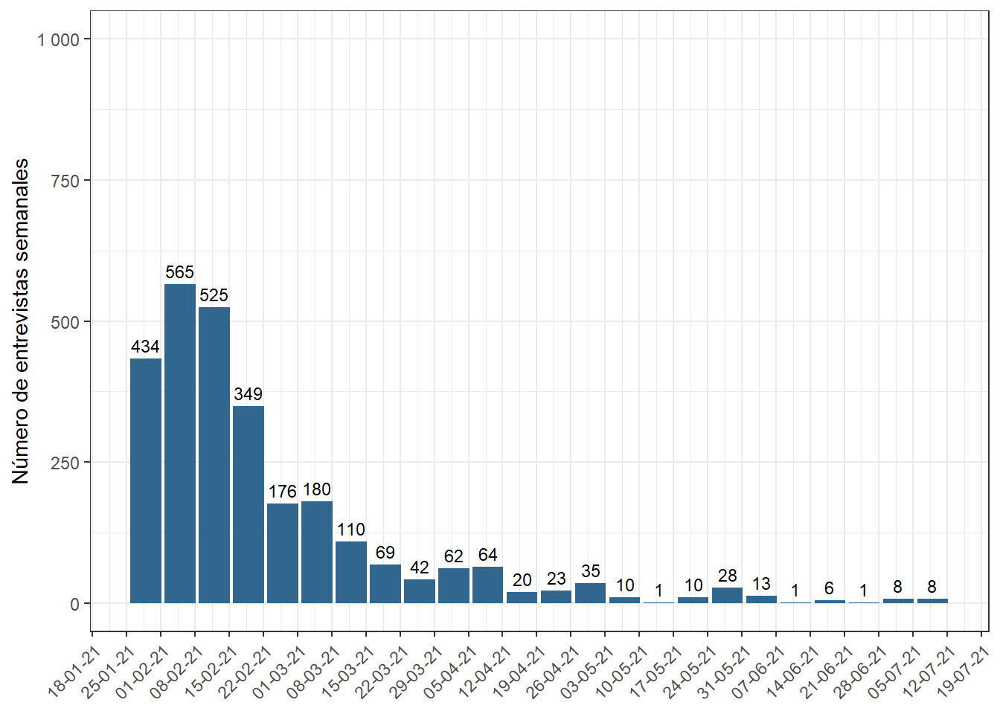

Sección 3 Implementación de la Encuesta
3.1 Características generales del levantamiento
Ente ejecutor
Dados los estándares de calidad y transparencia de ELSOC, la implementación de ELSOC se realiza por medio de una institución independiente, adjudicada mediante licitación pública. A la fecha se han realizado 3 licitaciones públicas: en 2016, 2018 y 2020, cada una cubriendo 2 mediciones del estudio. Esto es, las olas 2016 y 2017 (Muestra Original), olas 2018 y 2019 (Muestras Original y Refresco), y olas 2021 y 2022 (Muestras Original y Refresco), respectivamente.
El Centro Micro Datos (CMD) de la Facultad de Economía y Negocios de la Universidad de Chile se ha adjudicado los 3 concursos, por lo que ha estado a cargo del desarrollo de la encuesta desde sus inicios. Las bases de licitación y, por lo tanto, el acuerdo con Micro Datos, contempla los más altos estándares de calidad y asegura un adecuado resguardo de los datos personales de contacto de los participantes del estudio panel.
A continuación se describen algunos de los criterios y prácticas aplicadas para asegurar la calidad del levantamiento y procesamiento de datos:
Pilotaje del Cuestionario
Cada cuestionario de ELSOC es piloteado siguiendo la modalidad de levantamiento de ELSOC, con el objetivo de testear el instrumento y evaluar el funcionamiento operativo del levantamiento
El pilotaje se realiza los meses previos al levantamiento oficial, seguido por una ronda de focus group a los encuestadores con el objetivo de obtener recomendaciones relevantes para el levantamiento final de la encuesta. La información obtenida es utilizada para introducir cambios a los cuestionarios y para definir ajustes al programa de capacitación de los encuestadores.
Para el proceso de pilotaje se utiliza una muestra aleatoria en la Región Metropolitana, obtenida a partir del empadronamietno realizado por el CMD para la muestra original.
Planificación y Ejecución del Campo
La selección y capacitación de los Coordinadores de sede, encuestadores y supervisores constituye un pilar fundamental del levantamiento. Por ello, es indispensable que tanto los Coordinadores como los encuestadores entiendan a cabalidad la encuesta y su objetivo, de modo que sean capaces de argumentar la importancia y funcionalidad de la información que están recogiendo.
Para esto, un primer paso es la selección de Coordinadores/as de Sede, los que se encuentran encargados de liderar al equipo de encuestadores de cada zona administrativa (sedes). Se seleccionan personas con experiencia en este cargo en encuestas en olas anteriores del proyecto y/o con experiencia en encuestas complejas.
Para el caso de los encuestadores y encuestadoras, se convoca a encuestadores/as participantes de olas anteriores del proyecto y donda la evaluación de su trabajo fue satisfactoria. También se invitó a encuestadores que hubiesen participado en los últimos proyectos de encuestas realizados por el CMD.
Para cada proceso de levantamiento se realizan capacitaciones a encuestadores y supervisores, en aspectos del estudio (objetivos, cobertura, tipos de entrevistados, etc.), aspectos metodológicos en el formato de acplicación, y en el cuestionario.
Adicionalmente, se elaboró y utilizó un Manual del Encuestador para la implementación de ELSOC y documentos orientadores y protocolos para la aplicación del cuestionario. Esto incluye:
Protocolo de Visita: primer contacto con la vivienda, primer contacto con el hogar y concertación de entrevistas en casos en que no se puede realizar entrevista al momento de visita.
Protocolo ante Casos Difíciles: escenario de negaciones, escenario de más de 4 intentos presenciales sin contacto, barreras de acceso a la vivienda, no contacto con la vivienda. También contempla estrategias de recuperación.
Protocolo de Aplicación del Cuestionario: descripción del estudio, consentimiento informado, aplicación de preguntas, manejo de interrupciones, entrega de gift cards.
Protocolo de Campo: respaldo de información, control de avances, registro de contactos.
Los documentos fueron adaptados de modo tal de ajustarse a los requerimientos del seguimiento de una muestra previamente entrevistada.
Control y aseguramiento de calidad del trabajo de campo
Desde el inicio del levantamiento y durante toda su ejecución, se realizan estrategias de supervisión y control de calidad de manera constante, orientadas no solo a monitorear el estado de avance sino también a detectar de manera temprana y en tiempo real errores ocurridos durante el levantamiento, problemas de comportamiento entre los encuestadores, entre otros aspectos.
Se han implementado las siguientes estrategias de alerta temprana y medidas correctivas durante el proceso de levantamiento:
Revisión del 100% de las encuestas recopiladas, en término de las observaciones registradas por el encuestador, por parte del Coordinador/a de Sede. En esta etapa se verifica que efectivamente se haya encuestado a la persona elegida en el proceso de muestreo y se verifica el correcto llenado de la hoja de ruta, y horario y duración de la ejecución de la entrevista.
Supervisión de encuestas recopiladas por parte de personas distintas al equipo de encuestadores que realizaron el levantamiento. Para esto se recontacta a un porcentaje de la muestra (entre 10 y 25% de la muestra completa, dependiendo de la ola), seleccionado aleatoriamente, y se verifican las respuestas en preguntas claves, para detectar y corregir a tiempo eventuales sesgos de equiop encuestador, errores de aplicación, y posibles faltas graves como la falsificación de la encuestas.
Retroalimentación semanal a encuestadores por parte de los jefes de zona, en base a los resultados de la revisión y supervisión de encuestas.
Validación constante de la información recopilada por parte del equipo central a la base de datos y fichas de validación.
Reporte semanal a equipo COES informando respecto al estado de avance del levantamiento.
Estrategia de Seguimiento
Un aspecto esencial para el funcionamiento continuo de ELSOC es lograr el seguimiento en el tiempo de los encuestados seleccionados en la muestra. Para esto, se definen estrategias de fidelización y seguimiento que permitan reducir el fenómeno de atrición.
Algunas de las medidas implementadas son:
Obtención, almacenamiento y actualización de información relevante para garantizar un adecuado contacto: nombre del entrevistado, información de contacto (número de teléfono y correo electrónico), y aspectos básicos para su identificación. Dicha información es almacenada y utilizada siguiendo estrictos estándares de confidencialidad.
Realizar pre-contacto para concertar entrevistas y planificar el campo previo a la fecha de levantamietno. Cada encuestador recibe del coordinador de sede los datos sobre las citas concertadas con participantes ELSOC y utiliza un protocolo de entrevista específico para reentrevistas.
Conformación de equipos de encuestadores de perfil variado, privilegiando a aquellos/as con experiencia en olas anteriores de ELSOC o en otras encuestas complejas. Los encuestadores y coordinadores son capacitados en aspectos propios del cargo y en aspectos técnicos del cuestionario y del estudio, poniéndo énfasis en el protocolo de entrevista.
Uso de cartas de presentación para cada entrevistado, firmada por la Dirección del Centro de Microdatos, donde se explican los objetivos del estudio, las institucionales a cargo, la garantía de confidencialidad de los datos y la entrega del incentivo.
Entrega de un incentivo monetario a los encuestados luego de obtener la encuesta completa. El incentivo corresponde a una Giftcard para ser canjeada en supermercados o negocios afines. El incentivo fue de $6.000 durante las olas 2016, 2017, 2018 y 2019. Durante el levantamiento de la ola 2021 el incentivo monetario se incrementó a $9.000.
Re-contacto ante rechazos o problemas de contactabilidad por parte de encuestadores distintos al original, el que debe contar con un perfil adecuado a las características observadas de la muestra no lograda y con mayor experiencia en la aplicación de encuestas similares. Dichos encuestadores cuentan con un incentivo económico adicional para aplicar este tipo de encuestas definidas como “recuperadas”.
En los casos que el entrevistado se cambió de domicilio, se solicita a los encuestadores que averigüen sobre el nuevo domicilio y realicen los esfuerzos para lograr entrevistarlo en el nuevo domicilio. Esto se realiza tanto para cambios de domicilio a nivel comunas en la misma región o en otra comuna en una región distinta. En este segundo caso se deriva el folio al coordinador que tuvo a cargo la nueva comuna de residencia del entrevistado.
Se envian saludos navideños y similares a los participantes de ELSOC por correo electrónico en fechas relevantes. Adicionalmente, se entregaron folletos con los principales resultados de rondas anteriores, de manera que los entrevistados conocieran acerca del uso de los datos recopilados y su relevancia para el país
3.2 Incidencias en la aplicación de las encuestas
A continuación se detallan los hitos específicos asociados a la implementación de las olas 2016, 2017, 2018, 2019 y 2021:
3.2.1 Implementación Ola 2016
El levantamiento de la encuesta se llevó a cabo en un periodo de alrededor de 20 semanas, durante los meses de agosto a diciembre de 2016 (ver Figura 3.1). Para la ejecución del terreno se contó con 132 encuestadores distribuidos en 4 sedes de trabajo, cada una liderada por un coordinador/a de grupo debidamente capacitado/a.
El plazo fue mayor al pronosticado inicialmente (se estimó que duraría entre 8 y 12 semanas, extendiéndose finalmente a 20). Las principales dificultades encontradas y las medidas adoptadas para solucionar las eventualidades acontecidas fueron:
El CMD en su propuesta técnica comprometió un período de trabajo de campo de 8 semanas. Esta estimación de tiempo se basó en estudios recientes, pero no fue adecuada dadas las dificultades de acceso a la muestra y la dispersión de la misma.
El mayor problema se presentó en la Región Metropolitana que, a diferencia de las otras regiones, no consideró una sobredimensión de la muestra de acuerdo a tasas de respuesta históricas en encuestas de hogares con selección aleatoria del entrevistado. Para solucionar este problema se efectuó un aumento de la muestra (ver Etapa 5: Aumento del tamaño muestral para más detalles), lo que se tradujo en tiempo adicional de levantamiento.
Se tuvo dificultad en la convocatoria y permanencia de los encuestadores en el proyecto, debido a la dificultad de acceso a la muestra y su dispersión, los que hicieron que el pago propuesto a los encuestadores, en comparación a otros proyectos paralelos (dentro y fuera del Centro), fuera relativamente menos atractivo. El pago realizado y las facilidades entregadas a los encuestadores se fue incrementando gradualmente para solucionar este problema.
El cierre definitivo del trabajo de campo del levantamiento de la encuesta se desarrolló de común acuerdo con COES, una vez cubierta la totalidad de la muestra sobredimensionada6. El terreno se cerró finalmente con 2.984 encuestas realizadas.
Figura 3.1: Número de entrevistas por semana, ola 2016
Indicadores levantamiento
A continuación se presentan las Tasas de Respuesta 1 (TRR1, definida por la AAPOR), Tasa de Cooperación 1 (TCC1), Tasa de Rechazo 1 (TR1) y Tasa de Contacto 1 (TC1)7
| Indicador | Muestra Original |
|---|---|
| Tasa de contacto | 72.6% |
| Tasa de cooperación | 86.0% |
| Tasa de rechazo | 8.9% |
| Tasa de respuesta | 62.4% |
Corrección de datos por casos anómalos: Olas 2016 y 2017
En el contexto de la ejecución de la tercera ola del estudio ELSOC (año 2018) se diagnosticó la falsificación de un número acotado de casos a lo largo del estudio en las olas 2016 y 2017.
Durante la etapa de supervisión del trabajo de encuestadores durante el 2018, tercera ola de ELSOC, el Centro de Microdatos (CMD) detectó e informó que un conjunto de casos incluidos en la muestra panel son falsos.
Debido al lento avance de las metas de campo de ELSOC en 2018 en Tarapacá y Valparaíso, se enviaron nuevos encuestadores, los cuales detectaron estos problemas. En específico, las encuestas fueron sistemáticamente falsificadas: se realizaron a otras personas no incluídas en la muestra, o los encuestadores solicitaron información a terceros.
Esto llevó a un proceso exhaustivo de revisión, en la cual se detectaron 56 casos falsificados en el campo de 2016 y 47 en el campo de 2017, concentrados en las regiones de Tarapacá (11 casos en 2016 y 11 en 2017) y Valparaíso (45 casos en 2016 y 37 en 2017).
La estrategia de campo de CMD se centra en encuestadores experimentados, asignando los mismos casos a los encuestadores en el tiempo, acorde a la recomendación de la literatura especializada. El problema se concentró en algunos encuestadores específicos en dichas zonas, el cual no fue detectado durante la supervisión de campo de las dos primeras olas.
Los casos falsificados representan el 1,9% del tamaño muestral efectivo de ELSOC 2016 (N = 2.984) y 1,9% de 2017 (N = 2.522), por lo que se considera que éstos tienen un impacto marginal a nivel general. A pesar de esto, se tomó la decisión de excluir de las bases de datos los casos falsificados, y se generó y puso a disposición una versión corregida de las bases de datos 2016 y 2017. Los ponderadores fueron corregidos considerando la eliminación de estos casos.
Para evitar estos problemas en el futuro, se modificaron los protocolos de supervisión, aumentando la supervisión presencial y el porcentaje de casos supervisados por encuestador. Adicionalmente, se implementó un sistema de rotación de encuestadores de tal manera que la muestra no sea levantada por los mismos encuestadores en más de una ronda.
3.2.2 Implementación Ola 2017
El levantamiento definitivo de la encuesta se llevó a cabo en un período de doce semanas, durante los meses de julio y octubre de 2017 (ver Figura 3.2). Para la ejecución del terreno se contó con 120 encuestadores distribuidos en las 17 sedes de trabajo.
El terreno se llevó a cabo en un período mayor al pronosticado, pues se estimó que duraría nueve semanas, extendiéndose finalmente a doce. Sin embargo, el levantamiento de datos tuvo una duración menor al de la primera ola, que se extendió por 20 semanas. Esta mayor rapidez fue propiciada por la disponibilidad de datos de contacto de los encuestados obtenido en la ola anterior.
La extensión del terreno por sobre la estimación original se debió principalmente a que en las regiones Metropolitana y de Valparaíso existió una mayor dificultad para contactar a los encuestados.
El cierre definitivo del trabajo de campo del levantamiento de la encuesta se desarrolló una vez cubierta la totalidad de la muestra. El terreno se cerró finalmente con 2.521 encuestas realizadas.
Figura 3.2: Número de entrevistas por semana, ola 2017
Indicadores levantamiento
A continuación se presentan las Tasas de Respuesta 1 (TRR1, definida por la AAPOR), Tasa de Cooperación 1 (TCC1), Tasa de Rechazo 1 (TR1) y Tasa de Contacto 1 (TC1):
| Indicador | Muestra Original |
|---|---|
| Tasa de contacto | 88.7% |
| Tasa de cooperación | 93.1% |
| Tasa de rechazo | 6.0% |
| Tasa de respuesta | 82.6% |
3.2.2.1 Casos falsificados en ola 2017
Luego de los registros y procedimientos aplicados por el CMD el año 2018 se encontraron y corrigieron anomalías en encuestas realizadas en 2016 y 2017. Para más detalle del problema encontrado y su corrección revisar Corrección de datos por casos falsificados: Olas 2016 y 2017.
3.2.3 Implementación Ola 2018
El trabajo de terreno se desarrolló durante los meses de agosto a diciembre de 2018, dentro del tiempo estimado (15 semanas, aproximadamente) (ver Figura 3.3). Para la ejecución del terreno se contó con 189 encuestadores distribuidos en 18 sedes de trabajo.
Durante este levantamiento se incluyó la muestra de Refresco, lo que generó una dificultad para los encuestadores, ya que éstos deben explicar y motivar la participación en el estudio, tanto al grupo familiar como a los propios entrevistados.
Por otra parte, la muestra de seguimiento (muestra Original) de los entrevistados 2016-2017 tuvo dificultades de contactabilidad, debido a una mayor presencia de cambios de domicilios registrados que en las versiones anteriores de la encuesta. El 6,9% se había cambiado a un domicilio diferente.
Otra de las dificultades enfrentadas en ola tiene relación con los casos de falsificación detectados (ver Corrección de datos por casos falsificados: Olas 2016 y 2017). Este problema implicó una revisión exhaustiva en terreno de estos casos, y un fortalecimiento al sistema de control, contemplando lo siguiente:
Aumentar el porcentaje de encuestas a controlar, de 10% a un 15% el 2018. Asegurando controlar al menos el 20% del trabajo realizado por cada encuestador.
Estipular para futuras olas del proyecto rotación de los encuestadores sobre el mismo entrevistado.
Registro de las encuestadoras involucradas de manera de no ser consideradas en futuras aplicaciones del estudio. Respecto a la dinámica general del trabajo, se crearon incentivos económicos para que los encuestadores lograran la muestra esperada. Así mismo, se dispuso la movilización necesaria para que los encuestadores cubrieran toda la muestra en los distintos horarios.
El cierre definitivo del trabajo de campo del levantamiento de la encuesta se desarrolló de común acuerdo con COES, una vez cubierta la totalidad de la muestra. El terreno se cerró con 2.274 encuestas en la muestra de seguimiento y 1.523 encuestas en la muestra de refresco.
Figura 3.3: Número de entrevistas por semana, ola 2018
Indicadores levantamiento
A continuación se presentan las Tasas de Respuesta 1 (TRR1, definida por la AAPOR), Tasa de Cooperación 1 (TCC1), Tasa de Rechazo 1 (TR1) y Tasa de Contacto 1 (TC1):
| Indicador | Muestra Original | Muestra Refresco |
|---|---|---|
| Tasa de contacto | 86.0% | 66.0% |
| Tasa de cooperación | 93.0% | 88.0% |
| Tasa de rechazo | 5.0% | 8.0% |
| Tasa de respuesta | 80.0% | 58.0% |
3.2.4 Implementación Ola 2019
El levantamiento de datos de ELSOC 2019 estaba programado para comenzar el sábado 19 de octubre de 2019, sin embargo debido al Estallido Social ocurrido en Chile a partir del 18 de octubre de 2019, el trabajo de terreno debió ser suspendido hasta el jueves 21 de noviembre, fecha en que se inició finalmente la recolección de la información. Por lo tanto, el levantamiento se realizó durante el período de Estallido Social, lo que dificultó su ejecución.
Esta labor se extendió por un periodo de 13 semanas (Dado el desgaste propio de la muestra y del equipo de terreno, se decidió hacer una pausa en el levantamiento de datos durante las últimas 3 semanas de febrero de 2020) (ver Figura 3.4). Para la ejecución del terreno se contó con 143 encuestadores distribuidos en 16 sedes de trabajo, administradas por coordinadores de zona debidamente capacitados.
Figura 3.4: Número de entrevistas por semana, ola 2019
Indicadores levantamiento
A continuación se presentan las Tasas de Respuesta 1 (TRR1, definida por la AAPOR), Tasa de Cooperación 1 (TCC1), Tasa de Rechazo 1 (TR1) y Tasa de Contacto 1 (TC1):
| Indicador | Muestra Original | Muestra Refresco |
|---|---|---|
| Tasa de contacto | 86.0% | 87.0% |
| Tasa de cooperación | 93.0% | 95.0% |
| Tasa de rechazo | 5.0% | 3.0% |
| Tasa de respuesta | 80.0% | 83.0% |
3.2.5 Implementación Ola 2021
La crisis sanitaria producida por la pandemia de COVID-19 y las restricciones asociadas, implicaron cambiar la metodología de aplicación de la Encuesta Longitudinal Social de Chile de forma presencial a remota a través de una encuesta telefónica (Para más detalle ver Cuestionario 2021: levantamiento durante la pandemia de COVID-19). Este cambio en la forma de levantar los datos, presentó un gran desafío logístico y operativo, ya que desde sus orígenes ELSOC se había levantado de manera presencial.
La pandemia de COVID-19 también afectó la fecha tradicional de levantamiento de ELSOC, la cual estaba programada para comenzar durante octubre de 2020, sin embargo, el levantamiento de la quinta ola se inició el sábado 30 de enero de 2021 con la asignación de la muestra a los encuestadores capacitados. Las razones para postergar el período de levantamiento fueron principalmente por la espera de condiciones sanitarias y de cuarentenas más favorables que permitieran un levantamiento presencial (sin embargo, prontamente se volvió clara la imposibilidad de mantener la modalidad presencial); y por el tiempo adicional que tomó la preparación del terreno, producto del cambio de modalidad de levantamiento. El trabajo de campo se extendió hasta mediados de junio de 2021. Sin embargo, la aplicación se realizó mayoritariamente entre febrero y abril de 2021 (ver Figura 3.5).
Debido al degaste de la muestra y al desgaste del equipo de encuestadores por intentos infructuosos de contacto, es que a contar del mes de mayo se decidió cambiar la metodología de aplicación de producción por unidad muestral a conformar un grupo de encuestadores dedicado exclusivamente a repasar la muestra en una jornada laboral determinada.
Figura 3.5: Número de entrevistas por semana, ola 2021
Indicadores levantamiento
A continuación se presentan las Tasas de Respuesta 1 (TRR1, definida por la AAPOR), Tasa de Cooperación 1 (TCC1), Tasa de Rechazo 1 (TR1) y Tasa de Contacto 1 (TC1):
| Indicador | Muestra Original | Muestra Refresco |
|---|---|---|
| Tasa de contacto | 78.0% | 87.3% |
| Tasa de cooperación | 83.7% | 76.1% |
| Tasa de rechazo | 11.0% | 8.8% |
| Tasa de respuesta | 65.2% | 66.5% |
3.3 Atrición de la encuesta
A continuación, se presenta la atrición obtenida según Muestra:
|
Muestra Lograda
|
Tasa de Atrición
|
|||
|---|---|---|---|---|
| Medición | Muestra Original | Muestra Refresco | Muestra Original | Muestra Refresco |
| 2016 | 2927 | |||
| 2017 | 2473 | 15.5% | ||
| 2018 | 2229 | 1519 | 9.9% | |
| 2019 | 2153 | 1264 | 3.4% | 16.8% |
| 2021 | 1739 | 1001 | 19.2% | 20.8% |
- Según sexo:
|
Muestra Lograda
|
Tasa de Atrición
|
|||
|---|---|---|---|---|
| Medición | Hombres | Mujeres | Hombres | Mujeres |
| Muestra Original | ||||
| 2016 | 1163 | 1764 | ||
| 2017 | 953 | 1520 | 18.1% | 13.8% |
| 2018 | 841 | 1387 | 11.8% | 8.8% |
| 2019 | 807 | 1346 | 4.0% | 3.0% |
| 2021 | 631 | 1108 | 21.8% | 17.7% |
| Muestra Refresco | ||||
| 2018 | 607 | 912 | ||
| 2019 | 482 | 782 | 20.6% | 14.3% |
| 2021 | 378 | 623 | 21.6% | 20.3% |
- Según tramo etareo:
|
Muestra Lograda
|
Tasa de Atrición
|
|||||||
|---|---|---|---|---|---|---|---|---|
| Medición | 19-29 | 30-49 | 50-64 | 65 o más | 19-29 | 30-49 | 50-64 | 65 o más |
| Muestra Original | ||||||||
| 2016 | 506 | 1157 | 839 | 425 | ||||
| 2017 | 407 | 962 | 734 | 370 | 19.6% | 16.9% | 12.5% | 12.9% |
| 2018 | 340 | 863 | 687 | 338 | 16.5% | 10.3% | 6.4% | 8.6% |
| 2019 | 327 | 838 | 666 | 322 | 3.8% | 2.9% | 3.1% | 4.7% |
| 2021 | 269 | 685 | 546 | 239 | 17.7% | 18.3% | 18.0% | 25.8% |
| Muestra Refresco | ||||||||
| 2018 | 341 | 579 | 418 | 181 | ||||
| 2019 | 271 | 472 | 369 | 152 | 20.5% | 18.5% | 11.7% | 16.0% |
| 2021 | 216 | 391 | 282 | 112 | 20.3% | 17.2% | 23.6% | 26.3% |
- Según nivel educacional:
|
Muestra Lograda
|
Tasa de Atrición
|
|||||||
|---|---|---|---|---|---|---|---|---|
| Medición | Básica | Media | Técnica | Universitaria | Básica | Media | Técnica | Universitaria |
| Muestra Original | ||||||||
| 2016 | 656 | 1251 | 483 | 535 | ||||
| 2017 | 580 | 1062 | 396 | 434 | 11.6% | 15.1% | 18.0% | 18.9% |
| 2018 | 512 | 977 | 358 | 380 | 11.7% | 8.0% | 9.6% | 12.4% |
| 2019 | 490 | 953 | 341 | 368 | 4.3% | 2.5% | 4.7% | 3.2% |
| 2021 | 363 | 757 | 283 | 336 | 25.9% | 20.6% | 17.0% | 8.7% |
| Muestra Refresco | ||||||||
| 2018 | 283 | 633 | 253 | 347 | ||||
| 2019 | 254 | 537 | 206 | 264 | 10.2% | 15.2% | 18.6% | 23.9% |
| 2021 | 167 | 426 | 175 | 233 | 34.3% | 20.7% | 15.0% | 11.7% |
Si bien lo requerido es lograr la mayor cantidad de entrevistas exitosas, es necesario establecer un punto de corte debido a la imposibilidad de establecer contacto o lograr respuesta por parte del hogar/entrevistado.↩︎
Para mayor información sobre la determinación de los códigos de disposición final de casos y el cálculo de las tasas de resultados, ver AAPOR (2016). Standard Definitions. Final Dispositions of Case Codes and Outcome Rates for Surveys↩︎